专题07 角相关解答题分类训练（6种类型36道）

考点01 补全证明过程
考点02 角平分线相关角度计算
考点03 三角板相关角度计算
考点04 探究角的数量关系
考点05 旋转相关角度计算
考点06 互补和互余相关角度计算

考点01 补全证明过程
1．如图，已知 ，从
，从 的内部引出一条射线
的内部引出一条射线 ．
．

(1)尺规作图，在的外部作 ，使得
，使得 （要求只保留作图痕迹，不写作法）；
（要求只保留作图痕迹，不写作法）；
(2)小麓在完成（1）问的作图的基础上，发现了 与
与 之间满足某种数量关系，并进行了推理说明，聪明的你请帮助小麓补全下面的推理过程．
之间满足某种数量关系，并进行了推理说明，聪明的你请帮助小麓补全下面的推理过程．
解：
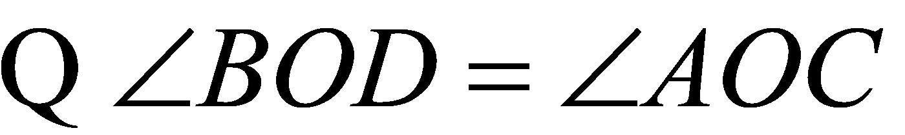
， ．
．
即∠ ①
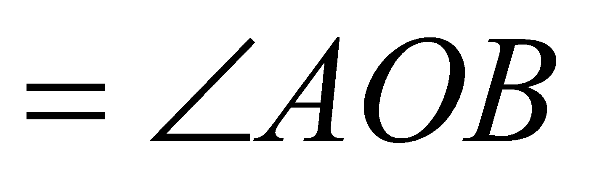
．又 ，
，
 ② °．
② °．
又
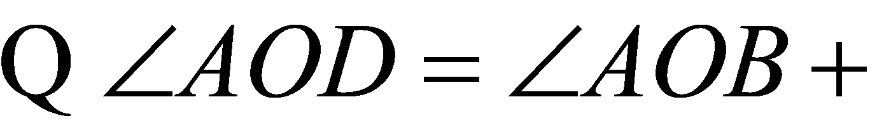
∠ ③ ，
 ∠ ④
∠ ④
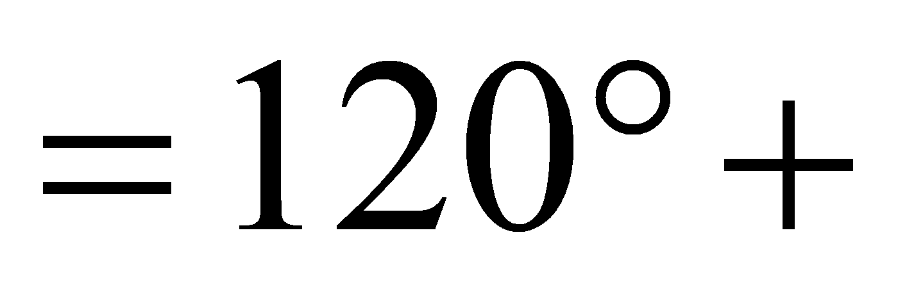
⑤ °= ⑥ °．
2．补全解题过程或填上推理的根据．
已知如图，
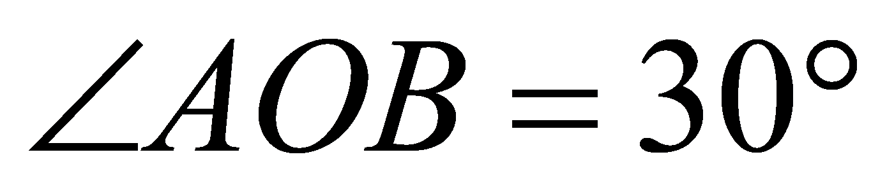
， ，
， 平分
平分 ，求
，求 的度数．
的度数．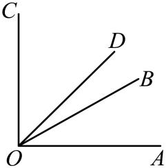
解：∵ _________，
_________，
又∵，，
∴
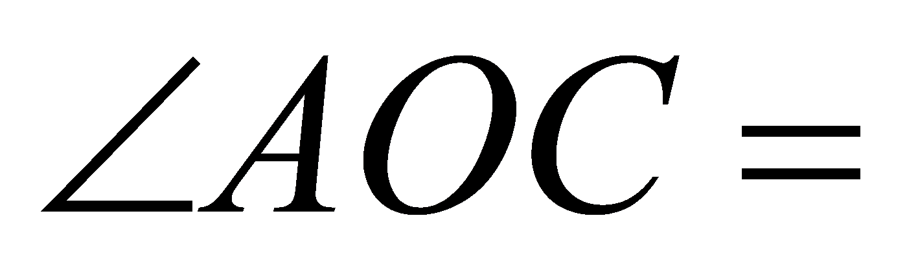
________ ．
．∵平分，
∴ （________________）．
（________________）．
∴ ________．
________．
∴
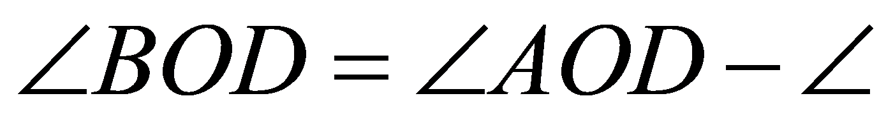
________．∴
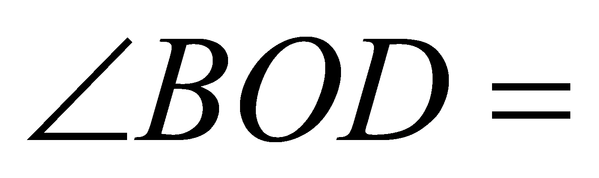
________．3．根据题意，补全解题过程：如图，已知射线 ，
， ，
， 在内部，平分，平分．若
在内部，平分，平分．若 ，
，
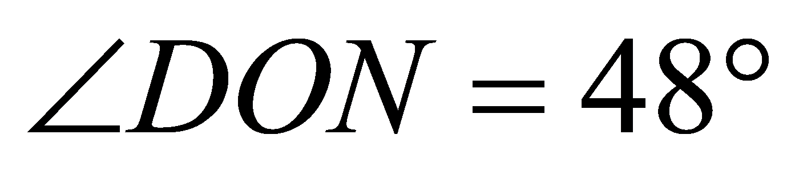
，求 的度数．
的度数．
解：∵平分，
∴______ ．（理由：___________）
．（理由：___________）
∵，
∴ ______
______
∵ ______
______ ，，
，，
∴______
∵平分，
∴
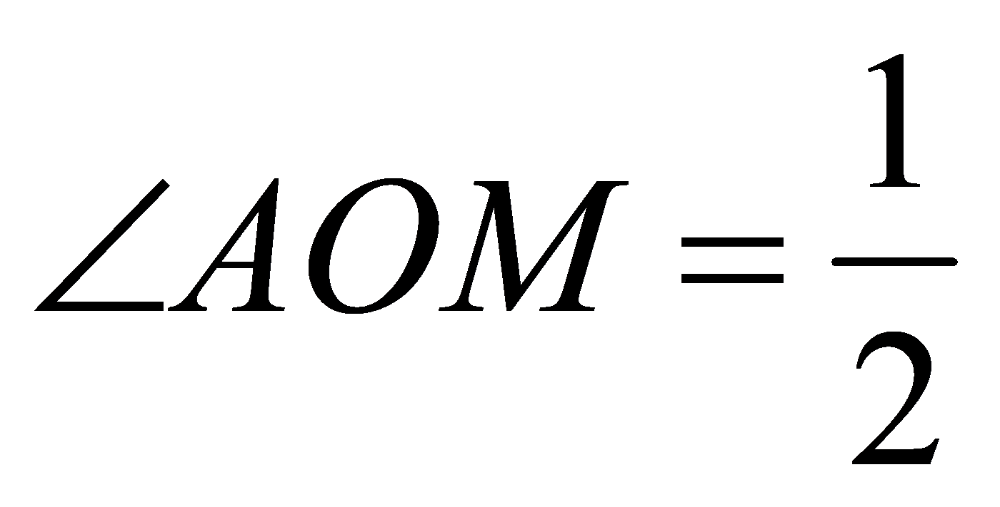
______＝______．4．补全下面的解题过程：
如图，已知是内部的一条射线， 是的平分线，
是的平分线， 且
且 ，求
，求 的度数．
的度数．

解：∵，，
∴ ______，
______，
∴
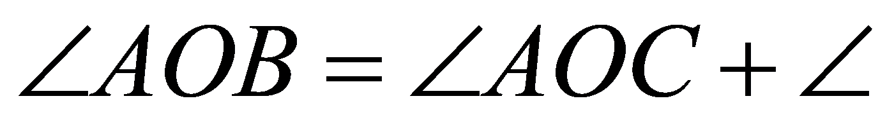
______ ______，
______，∵平分，
∴
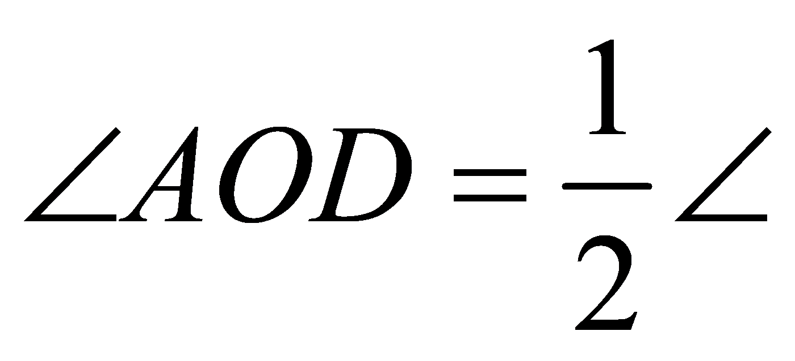
____________，∴ ______
______ ______．
______．
5．补全推导过程．如图，已知
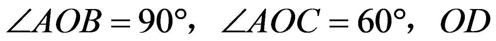
平分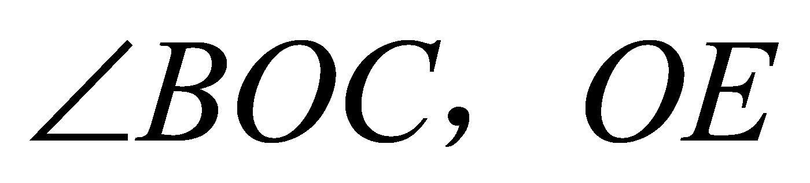
平分 ，求
，求 ．
．
解：
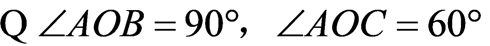
， ______．
______．
 平分，
平分，
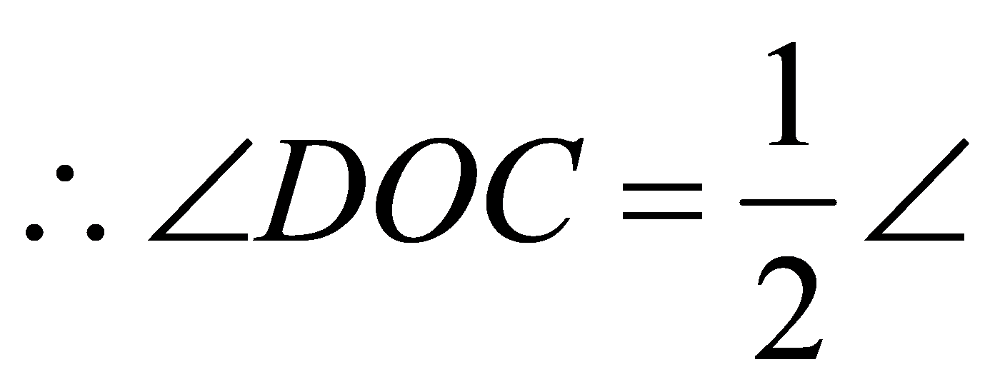
____________． 平分，
平分，
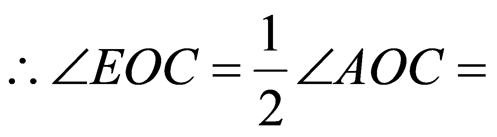
______， ______
______ ______．
______．
6．阅读材料并回答问题：
如图①，，平分，若 ，请你补全图形，并求的度数．
，请你补全图形，并求的度数．
以下是小明的解答过程：
解：如图②，因为，平分，
所以 ．
．
因为，
所以 ．

(1)请你将小明的解答过程补充完整；
(2)你觉得小明的解答是否正确？如果不正确，指出错误之处并给出正确的解答过程．
考点02 角平分线相关角度计算
7．如图，已知 是的角平分线，是的角平分线．
是的角平分线，是的角平分线．

(1)若 ，
，
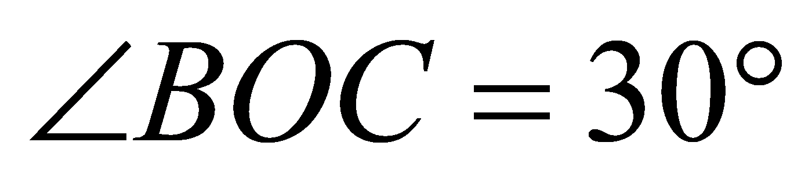
，求的度数；(2)若 ，
，
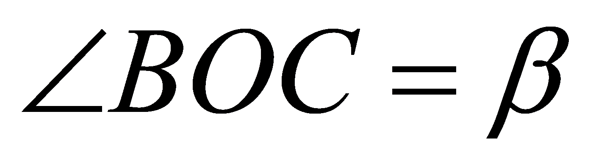
，求的度数．8．已知 分别是
分别是 的角平分线．
的角平分线．
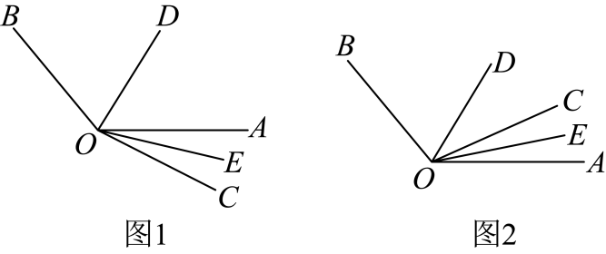
(1)如图1，是外部的一条射线．
①若 ，
， ，则
，则 ____________°；
____________°；
②若 ，求的度数；
，求的度数；
(2)如图2，是内部的一条射线，
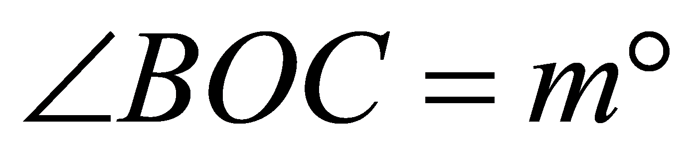
，用m的代数式表示的度数．（请用几何符号语言规范地表达）9．如图，已知
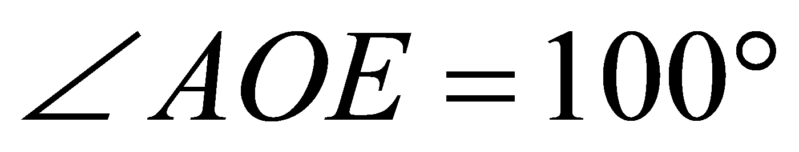
，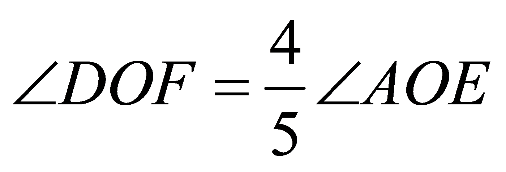
．、 分别是
分别是 、的角平分线，求
、的角平分线，求 的度数．
的度数．
10．如图，点 在直线
在直线 上，过作射线
上，过作射线 和
和 ，
， ，
， 是
是
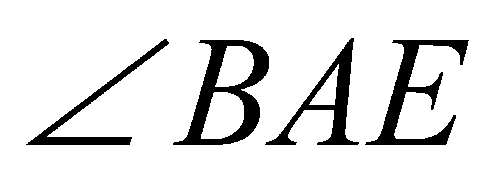
的角平分线，已知 ，求
，求 ．
．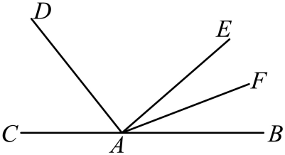
11．如图，和共顶点，为直角，是的角平分线，
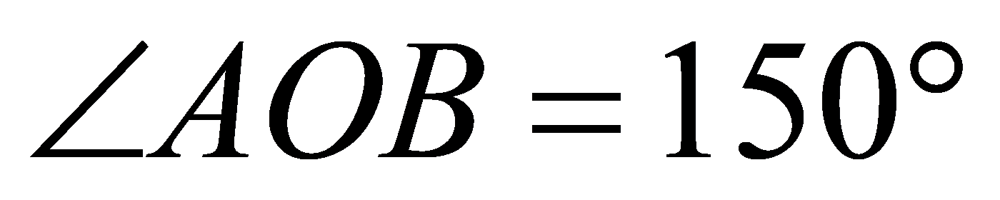
．
(1)求的度数；
(2)若
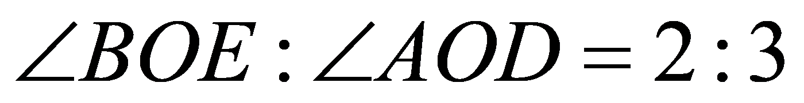
，求 的度数．
的度数．12．如图，是内部的一条射线，是内部的一条射线，是内部的一条射线．
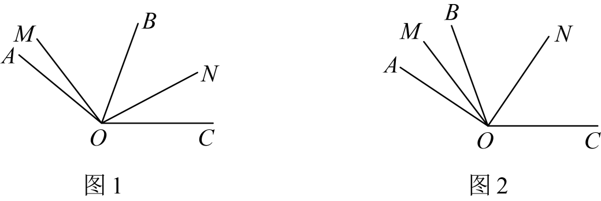
(1)如图1，若 ，
，
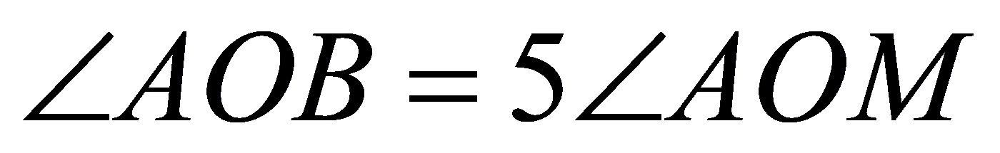
， ，求
，求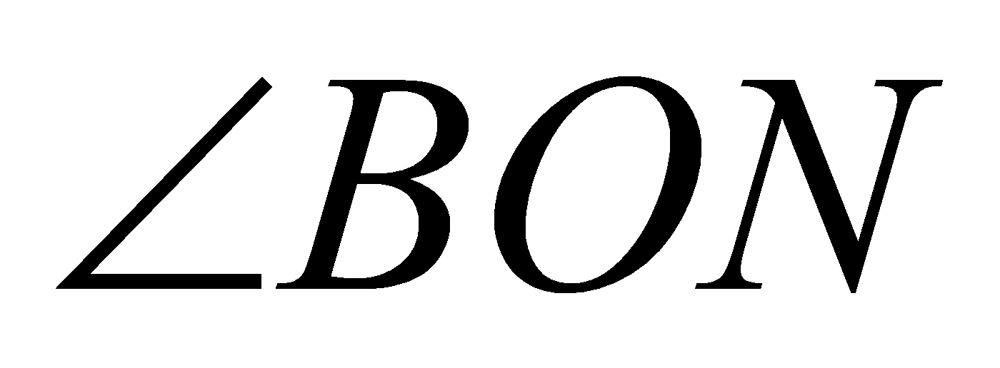
的度数．(2)如图2，若
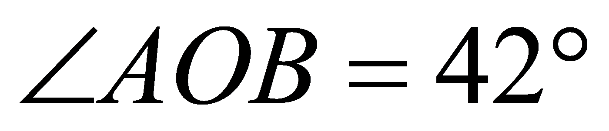
，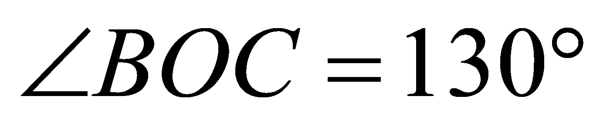
，、是、的角平分线，求 的度数．
的度数．考点03 三角板相关角度计算
13．如图， ，
， 是直线
是直线 上一点，现将一直角三角板的直角顶点放在点O处，一边在射线
上一点，现将一直角三角板的直角顶点放在点O处，一边在射线 上，另一边与都在直线的上方．现将图1中的三角板绕点以每秒
上，另一边与都在直线的上方．现将图1中的三角板绕点以每秒
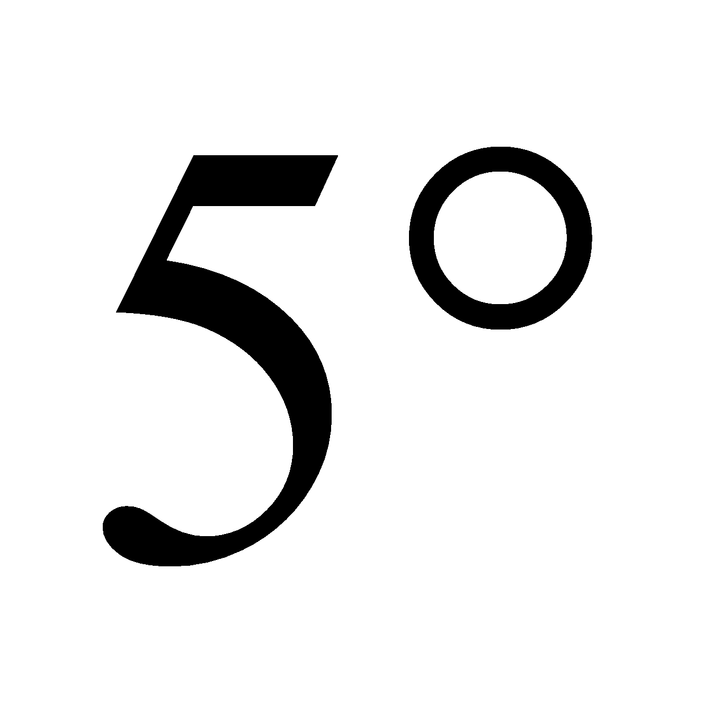
的速度沿顺时针方向旋转一周．
(1)如图2，经过多少秒后，线段恰好平分；
(2)在（1）的条件下，线段是否平分？请说明理由．
14．如图，两块三角板摆放在一起，射线平分
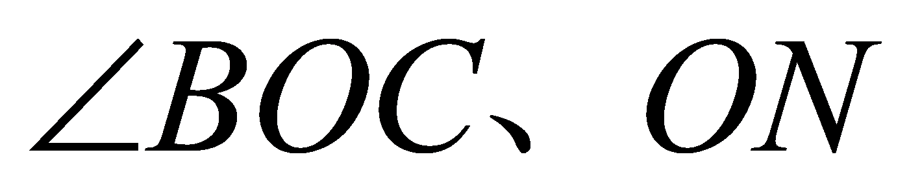
平分．
(1)求的度数；
(2)如果(1)中，一个三角板绕点O旋转一定角度，使得，其它条件不变，求的度数；
(3)如果(1)中，一个三角板绕点O旋转一定角度，使得，(α为锐角)，其它条件不变，求的度数；
(4)如果(1)中，一个三角板绕点O旋转一定角度，使得
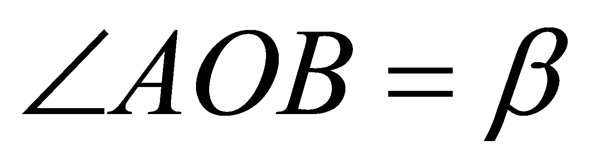
(β为锐角)，其它条件不变，求的度数．15．以直线上一点为端点，在直线的上方作射线，使 ，将一个直角三角板
，将一个直角三角板 的直角顶点放在处，即
的直角顶点放在处，即 ，且直角三角板在直线的上方．
，且直角三角板在直线的上方．

(1)如图 ，若直角三角板的一边在射线上，则的度数为_______；
，若直角三角板的一边在射线上，则的度数为_______；
(2)如图 ，直角三角板的边在的内部，若恰好平分．求此时的度数；
，直角三角板的边在的内部，若恰好平分．求此时的度数；
(3)在图中，请直接写出与之间的数量关系：_______．
16．如图所示，将一副三角板的直角顶点O重合叠放在一起．

(1)如图1若 ，则 ；若
，则 ；若 ，则 ；
，则 ；
(2)如图2若 ，则 ；
，则 ；
(3)猜想与的数量关系，并结合图1说明理由．
17．如图：两个特殊三角板 和三角板
和三角板 ，
， ，
，
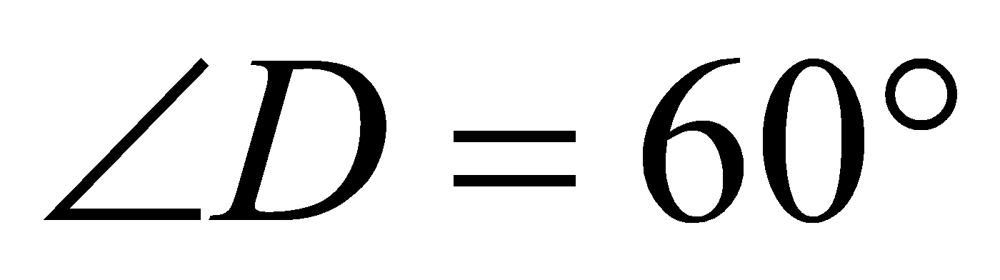
，O为直角顶点，两直角顶点重合，A，O，D在同一直线上，，重合，平分，平分．(1)求的度数；
(2)若三角板与三角板位置如图（2）所示，满足
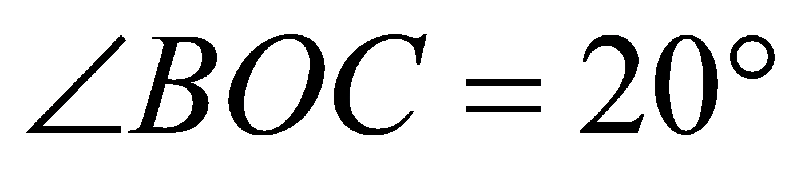
，求的度数；(3)在图（1）的情形下，三角板固定不动，若三角板绕着O点旋转（旋转角度小于 ），
）， ，直接写出的度数（用含
，直接写出的度数（用含 的式子表示）．
的式子表示）．
18．将一副三角板如图1摆放，使 ，在同一条直线上，
，在同一条直线上， ，
， ，平分
，平分 ，平分．
，平分．

(1)求的度数；
(2)将三角板绕点O逆时针旋转
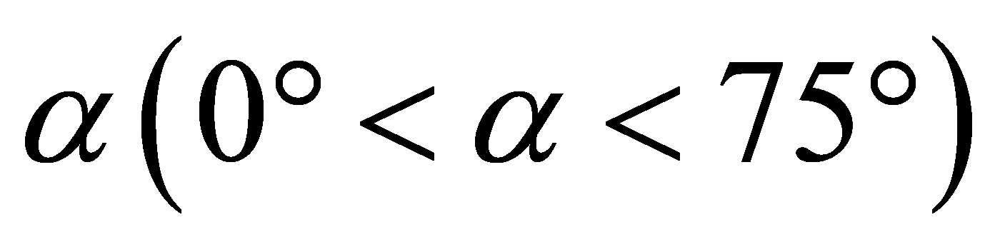
，其它条件不变，得到图2，请直接写出的度数______．考点04 探究角的数量关系
19．点O是直线上一点， ，平分．
，平分．
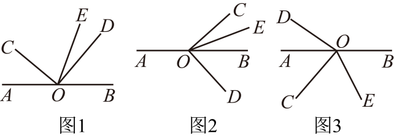
(1)如图1，若 ，则_____________，_____________；
，则_____________，_____________；
(2)将图1中的绕顶点O顺时针旋转至图2所示的位置，其他条件不变，若，求的度数（用含的代数式表示）；
(3)将图1中的绕顶点O顺时针旋转至图3所示的位置，其他条件不变，请直接写出与之间的数量关系．
20．已知为直线上的一点，是直角，平分 ．
．

(1)如图1，若 ，则
，则 __________；若
__________；若 ，则__________；
，则__________； 与
与 的数量关系是__________．
的数量关系是__________．
(2)当绕点顺时针旋转到如图2的位置时（在上方），（1）中与的数量关系是否还存在？请说明理由；
(3)在图2中，反向延长得射线，试探索射线能否平分 ，若能，求的度数；若不能，请说明理由．
，若能，求的度数；若不能，请说明理由．
21．如图，是直线 上一点，以为顶点作
上一点，以为顶点作 ，且，位于直线两侧，平分．
，且，位于直线两侧，平分．

(1)当 时，求的度数；
时，求的度数；
(2)请你猜想和的数量关系，并说明理由．
22．已知为直线 上一点，射线、
上一点，射线、 、
、 位于直线上方，在的左侧，
位于直线上方，在的左侧， ，
， ．
．
(1)如图1，当平分 时，求
时，求 的度数；
的度数；
(2)如图2，过点作射线 ，且
，且
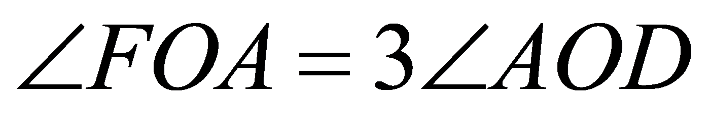
，请判断 和
和 的数量关系，说明理由；
的数量关系，说明理由；(3)如图3，在（2）的条件下，作射线 、
、 ，满足
，满足 ，且平分
，且平分 ．当
．当 时，求
时，求 的度数．
的度数．
23．已知O为直线上的一点， ，
，
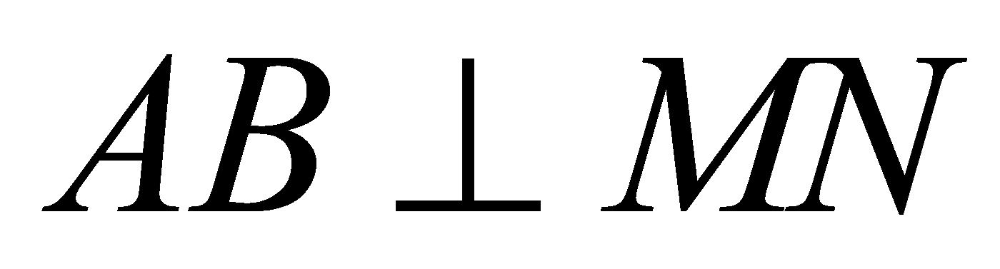
．
(1)如图①，以O为观察中心，射线表示正北方向，表示正东方，若
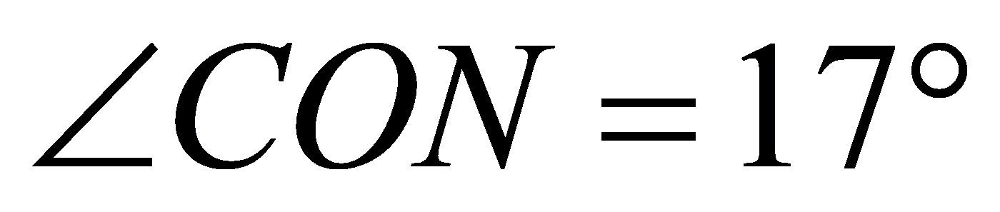
，则射线的方向是 ；若将射线、射线绕点O旋转至如图②所示的位置，另一条射线恰好平分 ．若
．若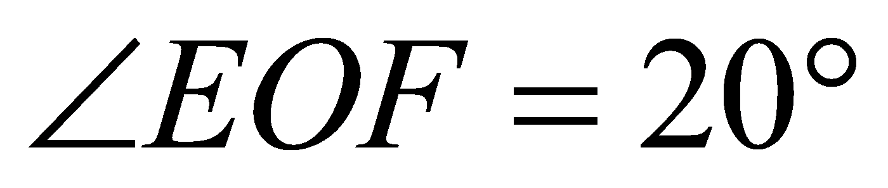
，求 的度数；
的度数；(2)若将射线、射线绕点O旋转至如图③所示的位置，射线仍然平分，
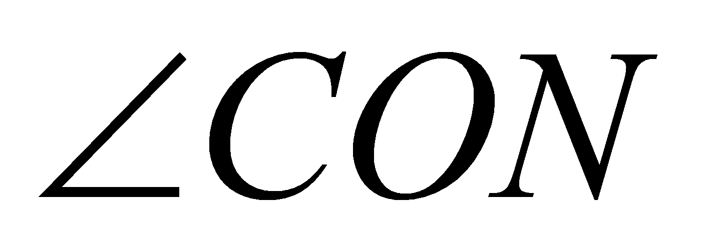
与之间存在怎样的数量关系？请说明理由．24．如图，在内部转动，，分别平分和．
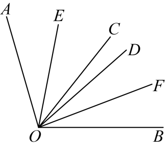
(1)若 ，，求的度数；
，，求的度数；
(2)试猜想，和会有怎样的数量关系．（直接写出猜想即可）
考点05 旋转相关角度计算
25．如图， ，将一个直角三角尺的顶点与点O重合，
，将一个直角三角尺的顶点与点O重合， ，平分，三角尺始终在的内部（三角尺的边可以与，重合）．
，平分，三角尺始终在的内部（三角尺的边可以与，重合）．
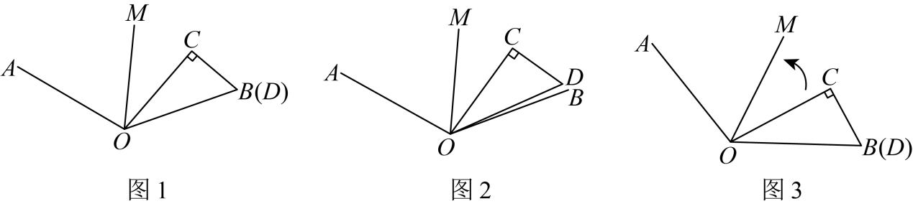
(1)如图1，当在射线上时，的度数为 ；
(2)如图2，三角尺在 的内部，当平分时，求的度数；
的内部，当平分时，求的度数；
(3)如图3，三角尺从与重合开始，以每秒的速度绕点O按图中的方向旋转，当到达处停止旋转．在三角尺旋转过程中，作为角平分线时， 的值为 （直接写出答案）．
的值为 （直接写出答案）．
26．点O是直线上的一点，射线从出发绕点O顺时针方向旋转，旋转到停止，设 ，射线
，射线
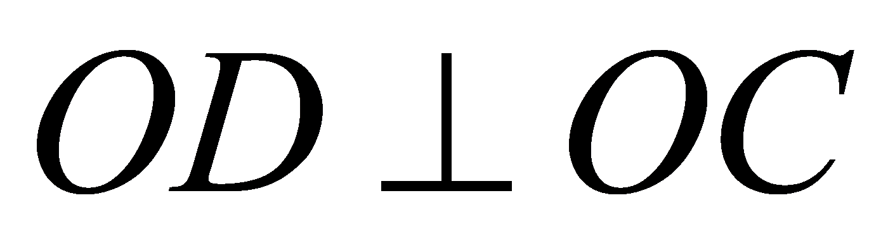
，作射线平分．
(1)如图1，若
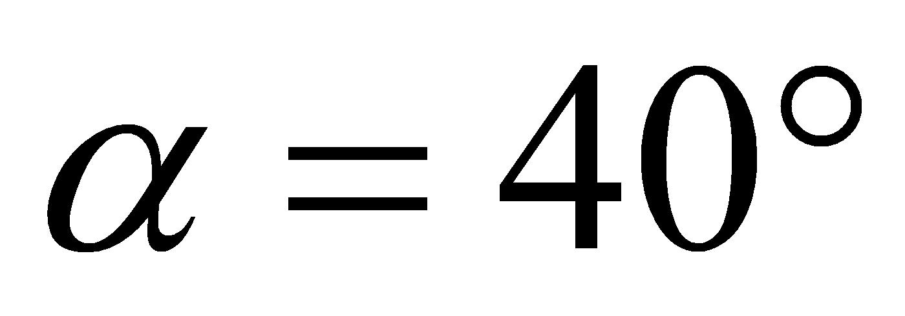
，且在直线的上方，求的度数．(2)射线顺时针旋转一定的角度得到图2，当射线在直线的下方时，其他条件不变，请你用含的代数式表示的度数．
(3)射线从出发绕点O顺时针方向旋转到，在旋转过程中你发现与（ ）之间有怎样的数量关系？请你直接用含的代数式表示的度数．
）之间有怎样的数量关系？请你直接用含的代数式表示的度数．
27．已知
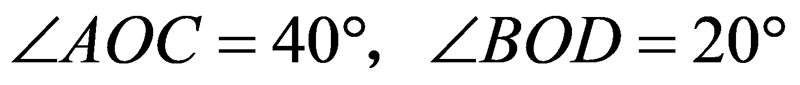
，和均可绕点进行旋转，点 ，，
，， 在同一条直线上，
在同一条直线上， 是的平分线．
是的平分线．(1)如图1，当点与点重合，点 与点重合，且射线和射线在直线
与点重合，且射线和射线在直线 的同侧时，求
的同侧时，求 的度数．
的度数．
(2)在（1）的基础上，若从处开始绕点逆时针方向旋转，转速为每秒 ，同时从处开始绕点顺时针方向旋转，转速为每秒
，同时从处开始绕点顺时针方向旋转，转速为每秒 ，
，
①当旋转_______秒时，与第一次重合；
②直接写出与第一次从相遇到分开所经历的时间．
(3)在（1）的基础上，若从处开始绕点逆时针方向旋转，转速为每秒，同时从处开始绕点逆时针方向旋转，转速为每秒，如图所示，当旋转时，则的度数为_______．
28．如图，在同一平面内，是绕点按顺时针方向旋转 得到的，是的平分线，是的平分线．
得到的，是的平分线，是的平分线．

(1)若 ，即，则________，________．
，即，则________，________．
(2)在的变化过程中，的度数是一个定值吗？若是定值，请求出这个值；若不是定值，请说明理由．
29．已知，是过点的一条射线， 分别平分
分别平分 ．
．

(1)如图①，如果射线在的内部， ，则 ；
，则 ；
(2)如图②，如果射线在的内部绕点旋转， ，则 ；
，则 ；
(3)如果射线在的外部绕点旋转，，请借助图③探究的度数．
30．已知，射线在的内部，射线，分别是和 的角平分线．
的角平分线．

(1)如图1，若，求的度数；
(2)请从下面，两题中任选一题作答，我选择 题．
．如图2，若射线在的内部绕点旋转，则的度数为 ．
．若射线在的外部绕点旋转（旋转中、均是指小于 的角），其余条件不变，请借助图3探究的大小，直接写出的度数．
的角），其余条件不变，请借助图3探究的大小，直接写出的度数．
考点06 互补和互余相关角度计算
31．如图，O，D，E三点在同一直线上，．
(1)图中的补角是______，的余角是______；
(2)如果平分， ，请求出和的度数．
，请求出和的度数．
32．如图，O为直线上一点， 平分
平分 ．
．

(1)请你数一数，图中有 个小于平角的角；
(2)的余角有 ；
(3)求出的度数．
33．定义：如果两个角的度数的和是，那么这两个角叫做互为半余角，其中一个角称为另一个角的半余角，例如： ，，因为，所以
，，因为，所以 和
和 互为半余角．
互为半余角．
(1)如果 ，是的半余角，那么的度数是_______；
，是的半余角，那么的度数是_______；
(2)如图，已知，射线在的内部，满足，是的平分线．

①在的内部画射线 ，使．并写出图中
，使．并写出图中 的半余角：________；
的半余角：________；
②是的半余角，当是的 时，求的度数．
时，求的度数．
34．如图，已知直线与 相交于点O，、分别是、的平分线．
相交于点O，、分别是、的平分线．
(1)的补角是_____；
(2)若 ，求和
，求和 的度数；
的度数；
35．如图，直线、交于点，已知，
(1)分别写出的邻补角、余角；
(2)若 ，试说明
，试说明 ．
．
36．综合与实践
【问题情境】利用旋转开展数学活动，探究体会角在旋转过程中的变化，

【操作发现】如图①， 且两个角重合．
且两个角重合．
（1）将绕着顶点O顺时针旋转如图②，此时OB平分 ；的余角有 个，分别是： ．
【实践探究】
（2）将绕着顶点O顺时针继续旋转如图③位置，若 ，射线OE在内部，且请探究：
，射线OE在内部，且请探究：
①的补角是哪几个角？ ．
②求的度数．